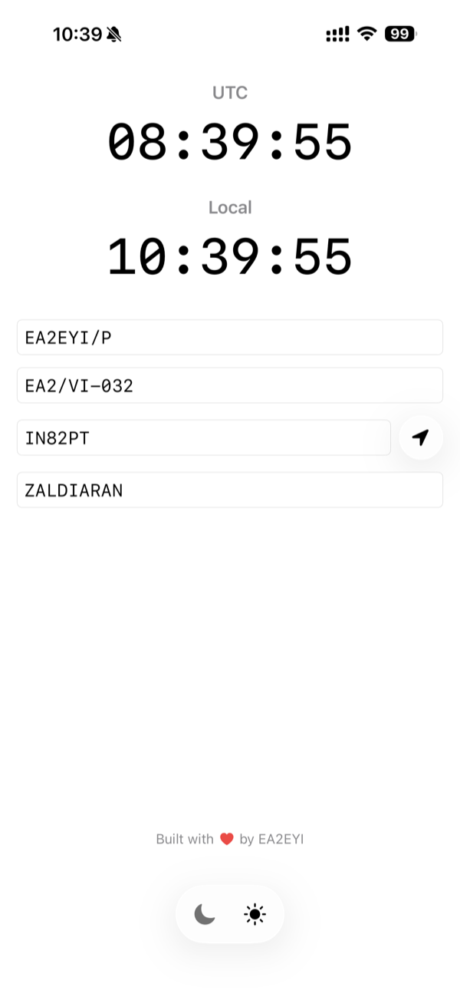
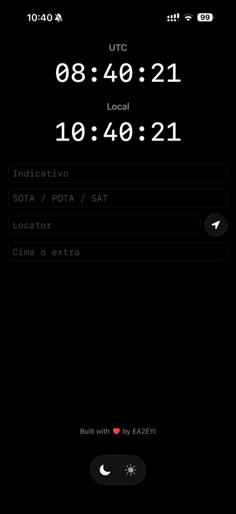
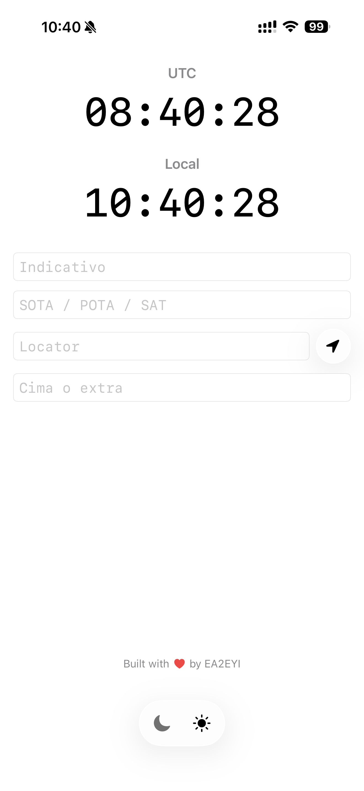

Para radioaficionados · EA2EYI
CQ Board
UTC, notas de activación y Maidenhead, en una sola pantalla.
App sencilla para SOTA, POTA y el día a día en radio: dos relojes (UTC y hora local, formato 24 h), un bloc de notas para referencias y grid locators, y conversión GPS → Maidenhead cuando la necesites. Todo se guarda en el móvil. Sin cuenta.
Versión para Android próximamente.
Qué hace
- Relojes UTC y local — formato 24 horas, a la vista.
- Bloc de notas — referencias SOTA, POTA, grids Maidenhead y lo que necesites en la activación.
- GPS → Maidenhead — solo cuando lo pides; la ubicación no se sube a ningún servidor.
- Tema luna / sol — cómodo de noche y de día.
- Persistencia local — tus notas se quedan en el dispositivo.
Qué no hace
- No pide cuenta ni registro.
- No obliga a tener red (funciona sin internet).
- No publica logs ni contactos a la nube.
- No es un logger completo ni un mapa de activaciones.
Capturas



Privacidad
CQ Board guarda datos en tu dispositivo. El GPS solo se usa si pides el localizador Maidenhead. No hay cuenta ni envío obligatorio a servidores.
Soporte
¿Dudas o un fallo? Escribe a joseangelcalvo5@gmail.com.
Indicativo del desarrollador: EA2EYI